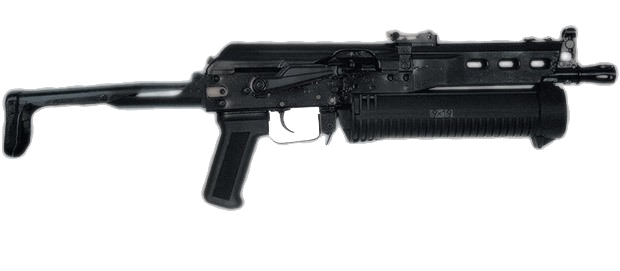
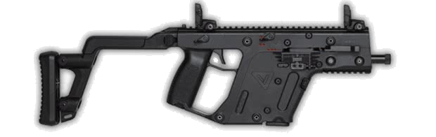
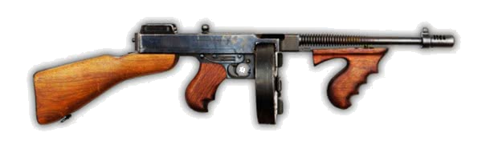
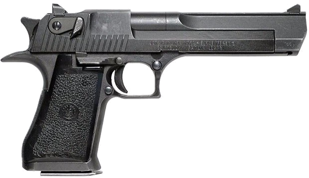
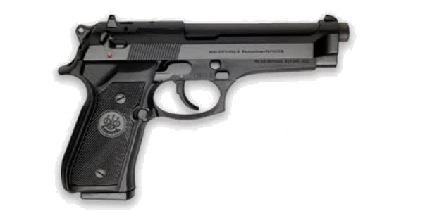
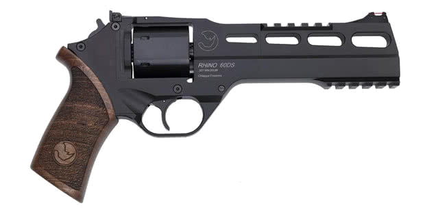
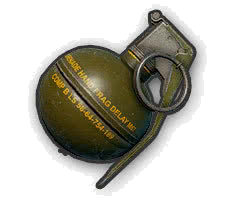
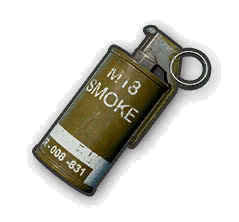
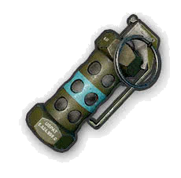

Tipos de Armas
Snipers
Karabiner 98 Kurz

Essa arma vintage tem um tiro forte e é comum aparecer em loot por todo o terreno de jogo. Com os extras certos, consegue ser bem eficaz. No entanto, apenas é possível recarregar bala a bala e, depois de cada tiro, é necessário tirar os olhos da mira por ser uma arma de ferrolho. Isso pode ser perigoso se você não abater os seus inimigos à primeira. É também a única sniper que permite apontar eficazmente com as miras de ferro de origem.
M24

Essa poderosa arma usa o mesmo calibre (7.62.mm) que a K98, a AKM, a Groza e outras. Mais estável e com maior rapidez de tiro que a K98, consegue tiros a maiores distâncias sem perder tanto tempo a recarregar. Se conseguir um carregador de maior capacidade, os seus inimigos vão tremer de medo.
AWM

Monstruosa, essa espingarda pode torná-lo no rei da partida. Usando um tipo de bala especialmente criado para ela, é a arma mais letal de PUBG na longa distância. Mesmo se o seu adversário estiver equipado com capacete e colete de nível 3, bastam apenas dois tiros para mandá-lo para o inferno. Infelizmente, essa arma aparece apenas em caixotes e com apenas 20 balas. Se tiver a sorte de pegar uma, faça essas balas valerem a pena.
D.M.R.
Mini14

Uma arma para todas as situações, a Mini 14 é difícil de dominar, mas letal nas mãos certas. O seu calibre é 5.56mm, baixo para arma de sniper, mas a velocidade inicial da bala compensa. É uma arma bem comum, não sendo necessário arriscar a sua vida para pegar uma em um caixote. É apenas semi-automática, por isso, a velocidade de disparo depende do seu dedo no gatilho (ou no botão do mouse). Com os extras certos, é possível estender o carregador até 30 balas.
SKS

Tecnologia soviética semi-automática, essa arma é muito versátil, capaz de tiros a longa distância com eficácia e com um carregador e potência acima da média. Com os extras certos, você pode aumentar a sua capacidade até 20 tiros por carregador e melhorar bastante a sua estabilidade. Além disso, é uma arma mais comum, que aparece no terreno de jogo e não apenas em caixotes.
SLR

Uma arma bem precisa, capaz de mais dano que a SKS, com ligeiramente mais recoil, a SLR é fácil de alterar pois é possível usar diferentes extras para AR como para rifles sniper.
Rifles de Assalto
M416

Provavelmente a arma mais versátil de PUBG e a favorita de muitos jogadores. O seu fogo automático é super rápido, o que a torna muito eficaz em combate a curta distância, mas é muito precisa na média e longa distância também. Tem espaço para cinco acessórios extra. Se conseguir aplicar todos, essa arma torna-se bem manejável e precisa.
AKM

Essa poderosa espingarda consegue cumprir vários papéis. Bem perto do inimigo é devastadora. Em média e longa distância, é precisa. Isso se deve em grande parte ao seu calibre. Infelizmente, todo esse poder extra também torna a sua estabilidade muito ruim. Precisa de muito treino para dominar.
AUG3

A AUG é uma arma apenas disponível em caixote, de calibre 5.56mm e permite levar 5 extras. Isso melhora a capacidade do carregador, a precisão e permite o uso de todo o tipo de miras. Sem nenhum extra é uma arma extremamente precisa, mas com algum recoil vertical, que limita sua utilização em automático na longa distância.
Submetralhadoras
Bison
Apenas disponível em Vikendi e Erangel, a Bison é uma boa adição ao arsenal de PUBG. Causa o mesmo dano que a UMP e tem uma cadência ligeiramente menor o que ajuda à sua estabilidade. O carregador é grande, permitindo trocas de tiro mais prolongadas. Permite apenas ponteiras e miras como extras, mas é relativamente fácil de controlar.
Vector
Altamente manejável, com um calibre potente e grande cadência de tiro, a Vector é uma arma eficaz em combate próximo. É possível usar todo o tipo de extras, melhorando ainda mais a sua estabilidade. Tem uma desvantagem grande na capacidade do carregador, pois, mesmo com os extras, ela consegue levar 24 balas no máximo. Aliando isso à grande cadência de tiro, você pode esgotar rapidamente as suas munições.
Tommy Gun
Uma arma clássica que não é fácil de controlar. Apesar de ser a submetralhadora que mais causa dano e de levar poucos extras, é muito difícil controlar o recuo, tornando a arma instável. No entanto o carregador enorme permite contato prolongado e em curta distância isso o dano que causa é bem eficaz.
Escopetas
S1897

Essa escopeta consegue levar 5 cartuchos. Cada um desses cartuchos leva 9 chumbos que causam 25 pontos de dano cada um. Isso torna essa arma um verdadeiro canhão. Em inimigo desprotegidos, a morte é praticamente certa com um único tiro. Infelizmente, precisa recarregar os cartuchos um a um e a distância efetiva não passa dos 50 metros.
S686

Uma arma de caça clássica, com apenas dois canos e, naturalmente, apenas duas balas. No entanto, é muito potente e ainda mais rápida de recarregar que a S1897. É altamente eficaz em interiores. Como a chumbada dupla é muito potente, compensa a falta de munição.
S12K

A única escopeta semi-automática de PUBG, a S12K consegue levar extras exatamente como uma espingarda de assalto, mas muito mais potente. Com os extras certos, é possível usar mais cartuchos no carregador, tornando-a bem temível. No entanto, depois de 25 a 30 metros, é muito difícil acertar no alvo de maneira eficaz.
Armas Especiais
Besta

Esse tipo de arma é útil para eliminar inimigos sem ser ouvido. No entanto, é preciso ter a certeza que o seu tiro vai resultar em morte instantânea.
DP28

Essa metralhadora soviética consegue ser encontrada em mundo aberto. Não há ainda dados sobre o dano que causa, mas deve situar-se na zona da AKM (pois usam o mesmo calibre). Tem um carregador de alta capacidade que demora a recarregar e uma cadência de tiro relativamente lenta. Isso permite pouco recuo e muita manejabilidade para uma arma bem poderosa.
M249

Uma metralhadora poderosa, com uma cadência de tiro eficaz e com pouco recuo, a M249 é apenas para jogadores experientes. Alimentada por um carregador massivo, consegue colocar dezenas de balas no alvo rapidamente e é útil tanto em curta como em longa distância. Infelizmente, o carregador demora quase 7 segundos a trocar e apenas consegue aplicar miras como extra. Também existe apenas em caixotes.
Pistolas
Desert Eagle
A pistola que causa mais dano do jogo é um verdadeiro colosso. Maior que o dano que causa, só mesmo o recoil de cada tiro. Bastam dois tiros para detonar um capacete de nível 3, mas é preciso muita habilidade para dominar esse coice. O carregador de 7 tiros também não ajuda muito. No entanto, é uma arma legal de usar nos primeiros instantes da partida.
P92
Uma arma modesta, capaz de bons tiros, dependendo da habilidade do jogador.
R85
Apenas disponível no mapa de Sanhok ,Miramar e Vikendi. Apesar de menor calibre que a R1895, consegue causar mais dano, carrega mais rapidamente e tem melhor manejabilidade.
Explosivos
Granada de Fragmentação
Não há grande segredo nesse tipo de armamento. Puxe a cavilha, deixe aquecer uns segundos e arremesse-a de presente para os seus inimigos. Muito útil em locais apertados, mas também divertida no exterior.
Granada de Fumaça
Útil quanto quer esconder os seus movimentos do inimigo. Não se esqueça de deixar a fumaça se espalhar por alguns segundos antes de se mover.
Granada de Atordoar (Stun)
Também chamada de Flashbang, serve para desorientar os seus inimigos causando um clarão intenso e um barulho ensurdecedor. Cuidado ao lançar ou o feitiço pode virar contra o feiticeiro.
Corpo a Corpo

As armas de corpo a corpo são similares entre si, tirando a Frigideira. Essa arma de luta corpo a corpo (e alta cozinha) consegue eliminar um inimigo desprotegido com dois golpes no corpo e um na cabeça. Além disso, protege ligeiramente o jogador de tiros, atuando como escudo. É a arma de corpo a corpo mais popular do jogo.